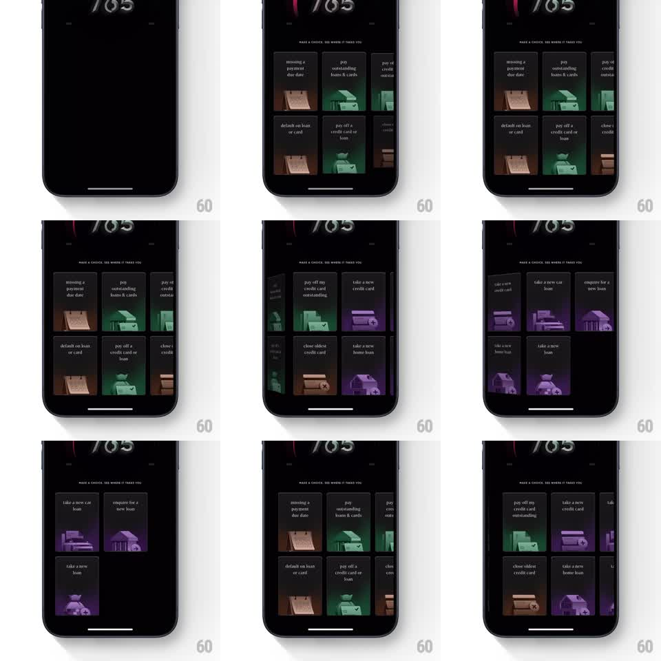

Media
Frame-by-frame

Rebuild this interaction 1:1: CRED's 3D card grid - on the dark score screen (765 at top), a two-column grid of illustrated action cards (missing a payment due date, pay outstanding loans & cards, default on loan or card, pay off a credit card or loan, take a new credit card, close oldest credit card, take a new home loan) scrolls with a cylindrical 3D rotation: cards tilt away with perspective as they leave the viewport and rotate back flat as they enter.

Rebuild this interaction 1:1: CRED's 3D card grid - on the dark score screen (765 at top), a two-column grid of illustrated action cards (missing a payment due date, pay outstanding loans & cards, default on loan or card, pay off a credit card or loan, take a new credit card, close oldest credit card, take a new home loan) scrolls with a cylindrical 3D rotation: cards tilt away with perspective as they leave the viewport and rotate back flat as they enter. ## Integration Integration: stack-agnostic spec - springs given as stiffness/damping, timed motions as duration + curve; map every value to your framework and animation library of choice. ## Scene Dark CRED screen. Top: a large score "765". Subtitle: "MAKE A CHOICE, SEE WHERE IT TAKES YOU". Below: a two-column grid of cards, each with a title and a small 3D illustration in its own color world (green, purple, brown/sepia): "missing a payment due date", "pay outstanding loans & cards", "pay off a credit card or loan", "default on loan or card", "take a new credit card", "close oldest credit card", "take a new home loan", "enquire for a new loan", "take a new car loan", "take a new loan". ## Motion spec Pattern: cylindrical 3D scroll with perspective tilt. - Vertical drag scrolls the grid 1:1; cards rotate around the horizontal axis based on viewport position: flat at center, rotating away (up to ~55deg) with perspective (~800px) as they approach the top or bottom edge. - Cards near the edge also scale down slightly (0.92) and dim (brightness 0.6), reading as a drum rolling under glass. - Fling: momentum scroll with spring settle (~280/24) and a rubber-band at both ends (max 60pt overdrag, spring back ~300/18). - Illustrations inside the cards keep their own parallax: they lag the card tilt by ~10%, adding depth. ## Calibration - The rotation is position-driven, not time-driven - stop scrolling and cards freeze mid-tilt. - Two columns tilt independently per row position. ## Reduced motion Grid scrolls flat without rotation or dimming. ## Don't miss - Cards at the very edge are nearly edge-on but never fully disappear - a sliver always shows. - Card color worlds stay saturated at center and desaturate as they tilt away.